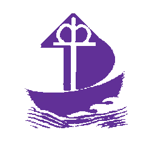

A Lakos Ádám Evangélikus Szeretetszolgálat Devecseri Idősek Otthona telephelye teljeskörű bentlakásos ellátást biztosít, térítési díj ellenében.
Intézményünkben a Veszprém megye területén élő gondozási szükséglettel rendelkező, de rendszeres fekvőbeteg-gyógyintézeti kezelést nem igénylő, a rá irányadó öregségi nyugdíjkorhatárt betöltött személy látható el.
Abban az esetben ellátható a 18. életévét betöltött, betegsége vagy fogyatékossága miatt önmagáról gondoskodni nem képes személy is ha gondozási szükséglettel rendelkezik és ellátása más típusú, ápolást-gondozást nyújtó intézményben nem biztosítható. Arról a tényről, hogy az igénybe vevő ellátása más típusú intézményben nem biztosítható igazolást kérünk.
Ha az egyébként ellátásra jogosult személy pszichiátriai vagy szenvedélybetegségben szenved, ellátásáról más intézmény keretében kell elkülönítetten gondoskodni, így fogadni nem tudjuk. (Vonatkozó jogszabály: A szociális igazgatásról és ellátásról szóló 1993 évi III.tv.)
Az ellátást az igénylőnek kell kérelmezni, ez történhet szóban és írásban egyaránt, az egészségi állapotra vonatkozó orvosi igazolás és a jövedelem-vagyon nyilatkozat együttes benyújtásával. A kérelemhez szükséges nyomtatványokat személyesen, postai vagy elektronikus úton eljuttatjuk az érdeklődőknek.
A beérkezett kérelmeket nyilvántartásba vesszük, ezért (ehhez) szükséges az igénylőnek egy adatkezelési hozzájárulást is benyújtania. A kérelmek beérkezése után megvizsgáljuk, hogy az igénylő jogosult-e a szolgáltatás igénybevételére. ( Vonatkozó jogszabály: a személyes gondoskodást nyújtó szociális ellátások igénybevételéről szóló 9/1999 (XI.24.) SzCsM rendelet)
A gondozási szükséglet az az a jogosultságot, elhelyezés előtt vizsgáljuk az úgynevezett előgondozással egyidejűleg. A szükséglet vizsgálat egy értékelő lapon történik, melyet az intézményvezető és az orvos (házi orvos, szakorvos, fekvő beteg intézmény orvosa) tölt ki. Idősotthoni ellátás az értékelő lapon összesített pontok alapján megállapított III. fokozat esetén indokolt.
A fennálló egyéb körülmények (fokozat besoroláson kívüli egyéb körülmény) igazolását az igénylőnek az előgondozás során kell átadni. Ezekben az esetekben gondozási szükséglet mértékét nem kell megállapítani. Az életkort személyazonosításra alkalmas igazolvány másolatával kell igazolni, a közművesítés hiányát a települési önkormányzat jegyzője igazolja. ( Vonatkozó jogszabály: 36/2007. (XII. 22.) SZMM rendelet a gondozási szükséglet, valamint az egészségi állapoton alapuló szociális rászorultság vizsgálatának és igazolásának részletes szabályairól).
Az előgondozás azt jelenti, hogy felkeressük az igénylőt az otthonában vagy tartózkodási helyén, hogy tájékozódjunk az ellátást igénybe vevő életkörülményeiről, egészségi állapotáról, szociális helyzetéről a megfelelő, személyre szabott szolgáltatás biztosítása érdekében, valamint megállapítsuk, hogy az igényelt szolgáltatás megfelelően szolgálja az igénybe vevő szükségleteinek kielégítését továbbá felkészítjük az ellátást igénybe vevőt az intézményi elhelyezésre.
Az ismerkedés, tájékozódás célja az is, hogy az intézmény kellően fel tudjon készülni a lakó fogadására. A találkozás alkalmával az intézmény képviselője részletes tájékoztatást nyújtást a szolgáltatás biztosításának feltételeiről, körülményeiről, a későbbi megállapodás tartalmáról, a várható térítési díj mértékéről, az intézmény házirendjéről.
Az intézményi elhelyezést megelőzően az igénybe vevőt vagy képviselőjét értesítjük a férőhely elfoglalásának kezdő időpontjáról, valamint az intézményi elhelyezéssel kapcsolatos egyéb teendőkről.